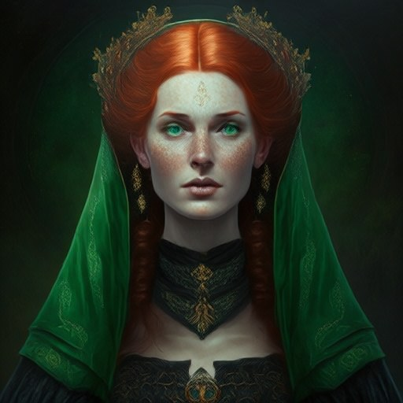
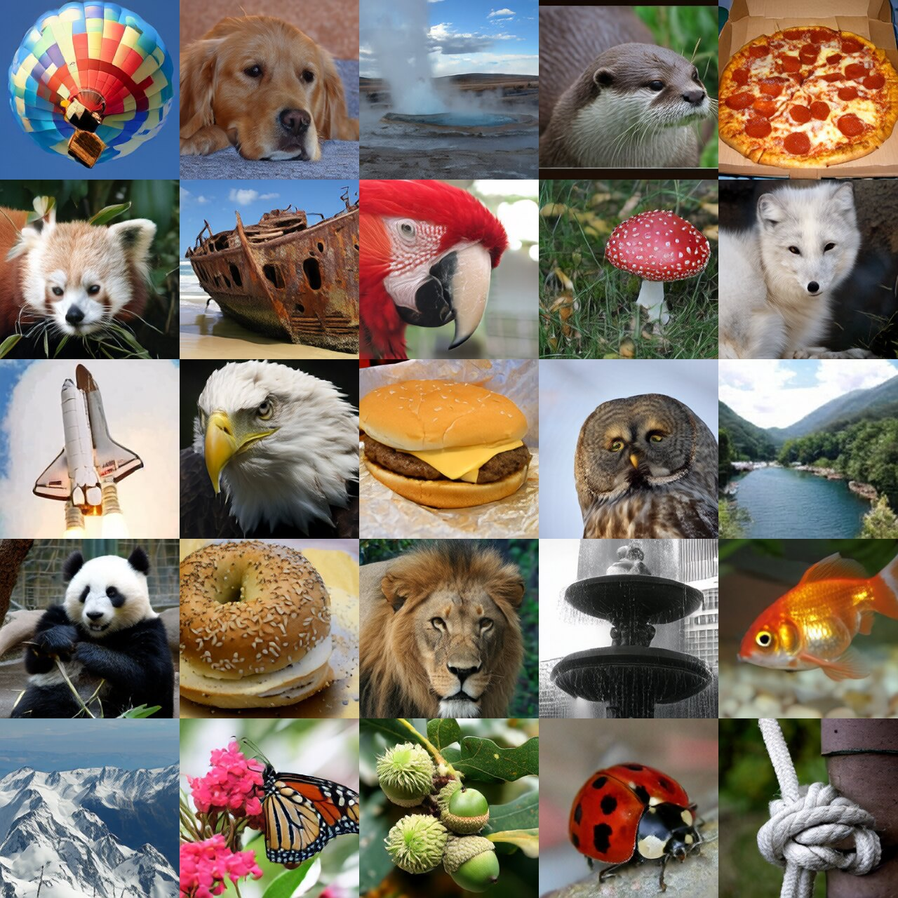
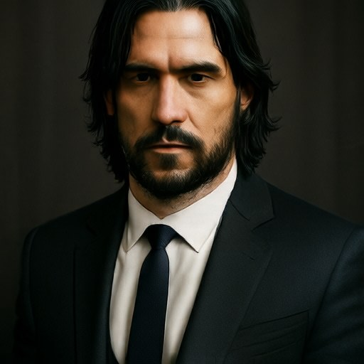
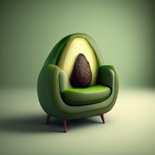

Single-Transformer Latent Diffusion
Three networks.
One transformer.
UNIFIED encodes, generates, and decodes images with one diffusion transformer. Every backbone weight is shared, and the model trains in a single stage, without DINO or GAN supervision.
University of Illinois Urbana-Champaign
gFID 2.08 with 215M total parameters.ImageNet-1K 256×256. No DINO, no GAN.
BibTeXKey highlights.
Encoder, generator, decoder.
Half the parameters.
Nearly the same gFID.
UNIFIED-T62M params
2.78
UNITE-S117M params
2.76
JiT-B/16131M params
3.66
gFID on ImageNet-1K 256×256, lower is better.
Text-to-image at 512×512.
GenEval 0.87 with 218M models.

Samples from UNIFIED-B (218M) at 512×512.
Design path
From UNITE to UNIFIED,
one change at a time.
UNITE already shares the encoder and the generator. Folding the decoder in takes three more choices: the sequence layout, the encoding timestep, and the decoding timestep.
Base models, about 215M parameters, ImageNet-1K 256×256, with classifier-free guidance.
ImageNet-1K 256×256
Better at every
matched size.
Same parameter budget, same training recipe, 200 epochs. UNIFIED improves gFID over UNITE at all three sizes, and the gain is largest where capacity is scarce.
| Size | Method | Params | gFID ↓ | IS ↑ | rFID ↓ |
|---|---|---|---|---|---|
| Tiny | UNITE | 61M | 3.00 | 272.4 | 1.27 |
| UNIFIED | 62M | 2.78 | 280.1 | 1.75 | |
| Small | Separate | 113M | 5.17 | 244.8 | 1.64 |
| UNITE | 117M | 2.76 | 283.9 | 1.13 | |
| UNIFIED | 116M | 2.43 | 295.9 | 1.04 | |
| Base | Separate | 222M | 3.96 | 267.7 | 1.38 |
| UNITE | 217M | 2.23 | 282.1 | 1.41 | |
| UNIFIED | 215M | 2.08 | 314.4 | 0.95 |
Across training and sampling budgets.
Sharing every weight costs compute: at Base, one forward pass is 1.63× UNITE’s, so the charts can be read per epoch or per FLOP. At matched budgets, UNIFIED reaches better final quality; UNITE leads only early, at lower quality.
gFID against training budget
Base, about 215M parameters
gFID against sampling budget
Base, Euler solver, log scale
ComparisonUNIFIEDUNITE
10% lesstraining compute for the same gFID
2.22546 EFLOPs, epoch 120
2.23608 EFLOPs, epoch 200
2.5× fewersampling FLOPs for a lower gFID
2.2364 steps, 5.2 TFLOPs
2.27256 steps, 12.8 TFLOPs
Against published models under 250M parameters.
UNIFIED-S outperforms every pixel-space model of similar size, and UNIFIED-B has the lowest gFID of any model under 250M parameters. Every model in the paper’s comparison with a lower gFID than 2.08 uses at least 545M parameters.
| Size | Method | Networks | No aux. info. | Diffuses in | Epochs | Params | gFID ↓ | IS ↑ |
|---|---|---|---|---|---|---|---|---|
| ≤100M | UNITE-T* | Gen. + Dec. | ✓ | Dynamic latent | 200 | 61M | 3.00 | 272.4 |
| UNIFIED-T | Gen. | ✓ | Dynamic latent | 200 | 62M | 2.78 | 280.1 | |
| 100–150M | JiT-B/16 | Gen. | ✓ | Pixels | 600 | 131M | 3.66 | 275.1 |
| PixelREPA-B/16 | Gen. + VFM | no | Pixels | 600 | 131M | 3.17 | 284.6 | |
| JiT-B/16 + RG | Gen. | ✓ | Pixels | 600 | 131M | 2.96 | 251.1 | |
| UNITE-S* | Gen. + Dec. | ✓ | Dynamic latent | 200 | 117M | 2.76 | 283.9 | |
| UNIFIED-S | Gen. | ✓ | Dynamic latent | 200 | 116M | 2.43 | 295.9 | |
| 150–250M | PixelU-B/16 | Gen. + VFM | no | Pixels | 600 | 164M | 3.40 | 276.0 |
| DSD | Gen. + VFM | no | Dynamic latent | 50 | 205M | 3.35 | 255.0 | |
| REPA-B, two-stage | Gen. + AE + VFM | no | Frozen latent | n/a | 214M | 2.15 | 268.3 | |
| UNITE-B* | Gen. + Dec. | ✓ | Dynamic latent | 200 | 217M | 2.23 | 282.1 | |
| UNIFIED-B | Gen. | ✓ | Dynamic latent | 200 | 215M | 2.08 | 314.4 |
* UNITE trained under our protocol. AE: pretrained autoencoder. VFM: pretrained vision foundation model (DINO). No aux. info.: ✓ if training uses no auxiliary pretrained representation, such as DINO features. Dynamic latent: a latent learned jointly with the generator.
Text-to-image
The same recipe,
conditioned on text.
Swap the class embedding for a text encoder and train from scratch. No pretrained VAE: the latent space is learned on the same data as the generator.
UNIFIED-L, 554M parameters, after 100k pretraining steps. 256×256, 50 Euler steps, guidance scale 6.0.
| Method | Params | Pretraining, 100k steps | Fine-tuned, 2k steps | ||||
|---|---|---|---|---|---|---|---|
| GenEval | DPG | GenAI | GenEval | DPG | GenAI | ||
| UNITE-B | 219M | 0.430 | 0.780 | 0.657 | 0.826 | 0.820 | 0.709 |
| DiTDH-XL, FLUX-VAE | 875M + 84M | 0.497 | 0.789 | 0.637 | 0.841 | 0.835 | 0.688 |
| JiT | 615M | 0.516 | 0.782 | 0.674 | n/a | n/a | n/a |
| NanoGen, SD-VAE | 611M + 84M | 0.578 | 0.804 | 0.691 | n/a | n/a | n/a |
| UNIFIED-B | 218M | 0.471 | 0.792 | 0.672 | 0.849 | 0.833 | 0.729 |
| UNIFIED-L | 554M | 0.527 | 0.794 | 0.685 | 0.878 | 0.848 | 0.748 |
All models are pretrained on the same data (JourneyDB, BLIP3o) with the same text encoder (Qwen3-0.6B). Note that UNIFIED does not rely on a pretrained VAE (SD-VAE, FLUX-VAE), which may have been trained on large-scale external data.
| Method | Params | No aux. info. | GenEval | DPG |
|---|---|---|---|---|
| PixelFlow-XL/4 | 882M | ✓ | 0.60 | 0.779 |
| PixNerd-XXL/16 | 1.2B | no | 0.73 | 0.809 |
| PixelGen-XXL/16 | 1.1B | no | 0.79 | n/a |
| DeCo-XXL/16 | 1.1B | no | 0.86 | 0.814 |
| UNIFIED-B | 218M | ✓ | 0.87 | 0.827 |
No aux. info.: ✓ if training uses no auxiliary pretrained representation, such as DINO features. UNIFIED-B is first trained at 256×256 for 200K steps, then fine-tuned at 512×512 for 12K steps, same as other methods.
More qualitative samples
Encoded, generated, decoded.
By the same weights.

Selected class-conditional samples, ImageNet-1K 256×256, guidance scale 4.0.
Text-to-image, across diverse prompts.

UNIFIED-B, 218M parameters, after 10k fine-tuning steps. 512×512, 50 Euler steps, guidance scale 6.0.

UNIFIED-L, 554M parameters, after 100k pretraining steps. 256×256, 50 Euler steps, guidance scale 6.0.
Questions & Answers
What is the key takeaway from UNIFIED?
- The decoder need not be a separate network. One diffusion transformer can encode, generate, and decode with every backbone weight shared, and it improves generation over UNITE at about 60M, 115M, and 215M parameters.
- Decoder parameters are better spent in the shared backbone. At a fixed Tiny budget, moving UNITE’s parameters from the decoder to the generative encoder improves gFID from 5.01 to 3.00, and removing the standalone decoder improves it further, to 2.78.
- How the three modes are specified matters as much as sharing the weights. Position alignment restores reconstruction, encoding at t = 1 matches what the encoder reads, and a learned decoding timestep removes the conflict between decoding and generation at the clean endpoint.
Is this state of the art on ImageNet?
No, and that is not the claim. Our largest ImageNet model has 215M parameters, and published models between 500M and 1B reach lower gFID. The claim is about matched budgets: with the same parameters and recipe, one shared backbone generates better than a shared encoder and generator with a standalone decoder (2.78 against 3.00, 2.43 against 2.76, and 2.08 against 2.23).
Why doesn’t the generation loss collapse the latent?
As in UNITE, the encoder output is detached in the generation loss. The same detached latent is the clean target and, once noised, the generator’s input, so no gradient from the generation loss can push the latent toward a trivial solution. Both losses still update the same shared weights.
Why is the decoding timestep −1?
It is a label, not a noise level. Decoding reads a clean latent, so t = 1 is the natural choice. But at t = 1, encoding and generation output a latent while decoding outputs pixels, and at the end of sampling the generation input is nearly the decoding input. Giving decoding its own learned embedding, outside the flow interval [0, 1], leaves t = 1 to the two modes whose target is the clean latent. At Base this lowers gFID from 2.15 to 2.08.
Where does it fall short?
- Alignment ties the latent length to the number of patches. In contrast, readout tokens can choose flexible latent lengths.
- The latent space cannot be frozen. Every update to the backbone also changes encoding and decoding, so the reconstruction loss stays active for all of training.
- It favors data with a shared token grid. Our evidence comes from images at 256×256. On QM9 molecules, which have no such grid, UNIFIED generates as well as UNITE but reconstructs slightly worse.
Citation.
BibTeX
@article{hsu2026unified,
title = {Single-Transformer Latent Diffusion},
author = {Hsu, Hao-Yu and Wang, Shenlong and Schwing, Alexander G},
journal = {arXiv preprint arXiv:2611.29064},
year = {2026}
}